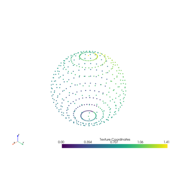
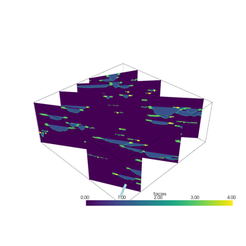
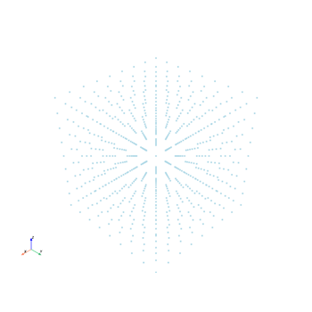
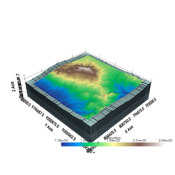
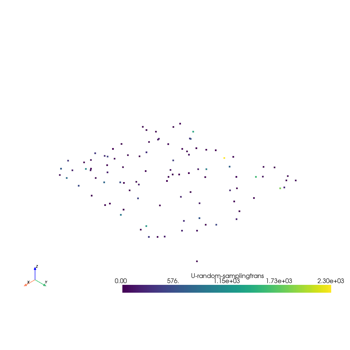
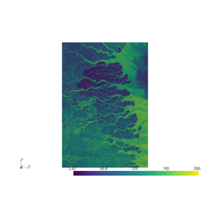

Quick Examples
Here is a gallery of all the quick examples demonstrating what PVGeo can do!
General Filters



Extract Points

Many Slices Along Points



Rotate Points

Grids

Extract Topography


GSLib
The examples shown here are downloaded from Multiple-point Geostatistics stochastic modeling with training images website (which recently went down, so we migrated those data files to another location for download).

Read GSLib Point Set


Read GSLib Table
UBC Data Formats

Read Tensor Mesh
Read UBC Topography File